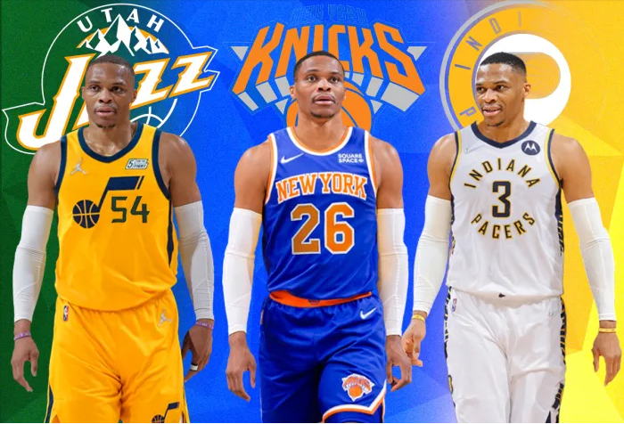
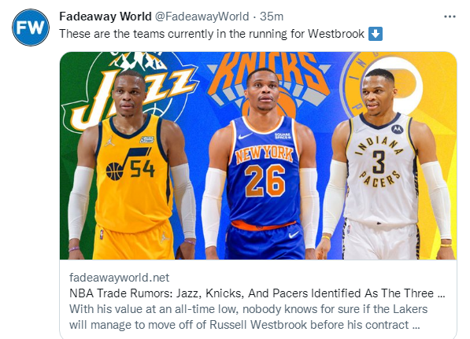

湖人想要交易威少，这不是什么秘密，但能否成功是个问题，因为威少的交易价值有限，想要得到他的球队并不多。 据查拉尼亚报道，目前可能成为威少新东家的有三支球队，分别是爵士、尼克斯和步行者。 “爵士、尼克斯和步行者等球队与湖人商讨了关于威少以及选秀权的交易，”查拉尼亚说，“随着休赛期交易市场在未来两个月将逐渐结束，这些对话并没有产生实质性的交易协议。”

查拉尼亚提到的未来两个月，指的是两个月后新赛季训练营将启动，代表着休赛期的结束，也就是说湖人想要在休赛期完成威少的交易运作，就剩两个月时间了。 威少的交易难点在于有意他的球队主要瞄准的是那份价值4700万的到期合同，而他们愿意收下这份大合同的前提条件是湖人要搭配首轮签，这是湖人比较排斥的，而如果湖人坚持不给的话，送走威少的前景又很渺茫，这就是为什么形成僵局。